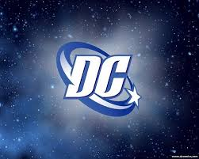
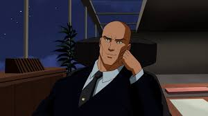
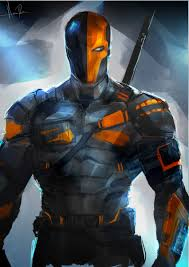
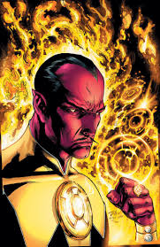
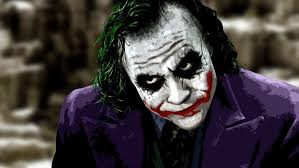
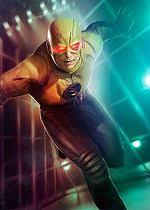

the origin story printed in Adventure Comics #271 (April 1960), young Lex Luthor is shown as an aspiring scientist who resides in Smallville, the hometown of Superman.
Luthor's revenge first came in the form of grandiose engineering projects in Smallville to prove his superiority over the superhero.

Powers and abilities. Slade Wilson's physical and mental attributes have been enhanced as a result of the experimental serum he was given;
he possesses heightened strength, agility, durability, and reflexes, and has the ability to utilize up to 90 percent of his brain capacity.

Sinestro is a former Green Lantern Corps member who was dishonorably discharged for abusing his power.
He is the archenemy of Hal Jordan and founder of the Sinestro Corps.

Batman: The Killing Joke (1988) built on the Joker's 1951 origin story, portraying him as a failed comedian
pressured into committing crime as the Red Hood to support his pregnant wife. Batman's interference causes him to leap into a chemical vat, which disfigures him.

Professor Eobard "Zoom" Thawne, also known as Reverse-Flash, is the arch-nemesis of the Flash. He is a twisted sociopathic criminal,
with a brilliant mind and super-speed, that was born in the 25th Century and travels through time to do battle with his most hated enemy.
 Powers and abilities. Ocean Master Pre-Crisis was a high tech sea pirate who utilized many innovative gadgets and weaponry during his early years as a supervillain. He even utilized a
special device that enabled him and his men to brave the depths of the sea without fear of the environment or drowning.
Powers and abilities. Ocean Master Pre-Crisis was a high tech sea pirate who utilized many innovative gadgets and weaponry during his early years as a supervillain. He even utilized a
special device that enabled him and his men to brave the depths of the sea without fear of the environment or drowning.